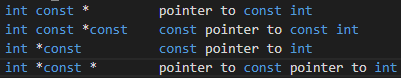

好久没更新啦，大家有没有想我呀
指针，是IT中一个十分十分复杂的话题，判读const和pointer的关系则更是烦人，所以，为了帮大家解决烦恼，我写了这篇文章
来初步解决const和指针。
C++ Primer 5e上有一种很不错的方法判断复合类型的含义，那就是从右往左阅读，离对象最近的符号对对象的类型有最直接的影响：
e.g.：

如果读不懂，可以尝试把星号读作Pointer to
这里有一个规律，星号左边的标识符可以任意调换顺序，右边亦是这样，但是左右边不能乱换。
所以int const*和const int*没有什么本质区别
以上 - The end.